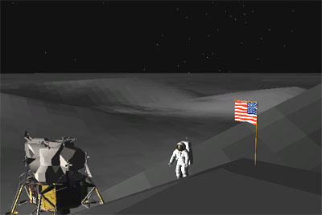

| |
Thanks to our great 3D graphic artists Project Apollo - NASSP and especially the NASSP Enhancement Pack provides beautiful meshes of the Apollo moon landing sites. But as you probably already know landing on surface meshes is problematic in Orbiter. Orbiter has a surface mesh "collision detection" related to the UNDERSHADOWS feature and we use it for the Tranquillity base landing site, but unfortunately this is not working for bigger or more complicated meshes or landing sites consisting of more, overlapping meshes. But thanks to Artlav now there's the Meshland plugin, which provides collision detection with surface base meshes. The latest Project Apollo - NASSP beta release now supports Meshland, so now we can land and walk on the lunar landing sites almost as the real astronauts did. |
 |
Please note that the Meshland integration is still under development, in the next release we plan to bundle it with Project Apollo - NASSP for easy installation, at the moment please follow the instructions below:
That all, now you can try to land the LM on the moon as explained below.
Landing on a quite flat landing site like Tranquillity is not very interesting. In order to provide a hilly landing site the "Meshland Pack" installs the Apollo 14 landing site, Fra Mauro. We start at the final appoach phase of the LM, also called "high gate".

<COMMA> = left 2 degrees
<PERIOD> = right 2 degrees
<HOME> = 1/2 degree further
<END> = 1/2 degree closer
At the beginning of Approach phase, each key hit moves the target about 160 meters. As the LM gets closer to the target, the redesignations move the target smaller distances.
Left/right redesignations will cause the LM to roll, which is necessary to change the direction of flight, and also to yaw in the direction of redesignation to keep the reticle on the target site at the LPD angle. It will take a few seconds for the yaw and roll to occur, so wait until the attitude settles down to make further adjustments. It works best if one estimates needed corrections for both left/right and near/far, enters them all at once, then wait until attitude settles to make finer adjustments. If you have a site targeted correctly, points on the surface closer than the site will appear to move toward bigger LPD numbers, while points beyond the site will appear to move toward smaller LPD numbers. The targeted site will stay at the displayed LPD number and centered on the vertical reticle.
At any time during approach phase, one can assume manual control and enter P66 using either the <MINUS> or <EQUALS> key.
Noun 60:
R1 = Forward velocity
R2 = Altitude rate
R3 = Altitude
At any time during landing phase, one can assume manual control and enter P66 using either the <MINUS> or <EQUALS> key.
P66 allows one to control the attitude of the LM using the numpad <2>, <4>, <6>, and <8> keys in the same manner as for RCS attitude control. Attitude will change only while a key is held down, and after key release attitude will remain constant until further control input. Rate of descent is controller using the <MINUS> or <EQUALS> keys. The first <MINUS> or <EQUALS> hit used to enter P66 does not increment or decrement the descent rate, but sets the current descent rate as default. Each <MINUS> or <EQUALS> key hit will increase/decrease the descent rate by 0.3077 m/s. P66 displays:
Noun 60:
R1 = forward velocity *10 (m/s)
R2 = rate of descent *10 (m/s)
R3 = altitude (m)
After we landed the LM on the Fra Mauro landing site we want to go a little bit mountain climbing on the moon.
That's all for the moment, if you have questions or need help using Meshland, please post at the Project Apollo forum here: http://www.ibiblio.org/mscorbit/mscforum.
 |
|